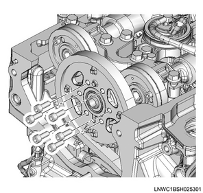
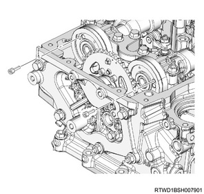
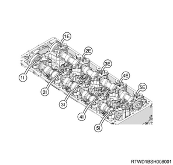
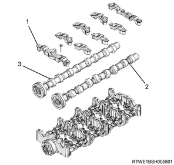
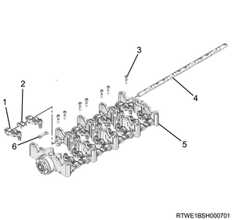

Rocker arm shaft assembly removal (4JJ1)
1. Battery ground cable disconnect
1. Open the engine hood assembly.
2. Disconnect the battery ground cable from the battery.
Caution
- Do not disconnect within 1 minute after turning OFF the ignition switch.
2. Crankshaft adjustment
1. Align the No.1 cylinder to compression top dead center.
Note
- Turn the crankshaft in the forward direction (clockwise) to align the 1st cylinder piston to compression top dead center.

- Top dead center alignment mark on the gear case cover
- Top dead center alignment mark on the crank pulley
3. Engine cover removal
1. Remove the engine cover from the engine.

- Engine cover
4. Intake air duct removal
1. Remove the intake air duct from the turbocharger and the intercooler.
Note
- Remove the part together with the intake hose.

5. Boost pressure sensor disconnect
1. Disconnect the connector from the boost pressure sensor.

6. Intake air duct removal
1. Remove the intake air duct from the intake throttle valve and the intercooler.
Note
- Remove the part together with the intake hose.

7. A/C compressor drive belt removal
1. Remove the A/C compressor drive belt from the pulley.

- A/C compressor drive belt
8. Bracket removal
1. Disconnect the vacuum hose from the turbocharger control solenoid.
2. Disconnect the connector from the turbocharger control solenoid.
3. Remove the bracket from the cylinder head cover.
Note
- Remove as a set with the turbocharger control solenoid.

9. Vacuum pipe removal
1. Remove the vacuum pipe from the cylinder head cover.

10. Injector disconnect
1. Disconnect the connector from the injector.
11. Fuel leak-off hose removal
1. Remove the fuel leak-off hose from the leak-off pipe.

- Fuel leak-off hose
- Injector connector
Caution
- Do not reuse the clip of the fuel leak-off hose.
2. Remove the leak-off pipe from the injector.

- Injector leak-off pipe
- Clip
Caution
- Do not reuse the leak-off pipe and the clip.
12. Blow-by hose disconnect
1. Disconnect the blow-by hose from the cylinder head cover.
13. Cylinder head cover removal
1. Disconnect the harness clip from the cylinder head cover.

2. Remove the cylinder head cover from the cylinder head.

14. Injection pipe removal
1. Remove the clip from the injection pipe.
2. Remove the injection pipe from the injector and the common rail (fuel rail) assembly.

Caution
- Do not reuse the injection pipe.
15. Injector removal
1. Remove the injector from the cylinder head.
Note
- Loosen the injector clamp fixing bolt to remove the injector clamp.
- If it is difficult to remove the injector, use a remover.
2. Remove the injector clamp from the injector.
Caution
- Cover the exposed portion to prevent foreign material from getting into the fuel system.
- Store the removed injector with the cylinder number on it.
- Take sufficient care not to hit the injector hole.
- Absolutely never touch the injector solenoids because that can hinder their performance or cause damage.
3. Remove the gasket from the injector.
4. Remove the O-ring from the injector.
16. Timing chain tensioner removal
1. Remove the oil pipe from the timing chain tensioner.
2. Remove the timing chain tensioner from the cylinder head.

- Oil pipe
- Timing chain tensioner
- Gasket
17. CMP sensor disconnect
1. Disconnect the connector from the CMP sensor.

- CMP sensor
18. Timing chain upper cover removal
1. Remove the timing chain upper cover from the cylinder head.

- Timing chain upper cover
19. Noise cover removal
1. Remove the noise cover from the timing chain lower cover.

20. Timing chain lower cover removal
1. Remove the timing chain lower cover from the gear case cover.

21. Timing chain lever pivot removal
1. Remove the timing chain lever pivot from the timing chain tension lever.

22. Timing chain removal
1. Remove the sprocket from the idle gear D.

2. Remove the timing chain from the cylinder head.
Note
- Remove the timing chain and sprocket as a set from the lower sprocket.
23. Baffle plate removal
1. Remove the baffle plate from the cylinder head.

24. Camshaft bracket removal
1. Install the lock bolt to the camshaft gear.
Note
- Use the M5 lock bolt to fix the camshaft gear.

2. Remove the camshaft bracket from the cylinder head.

- Camshaft bracket
- Cylinder head
25. Rocker arm shaft assembly removal
1. Remove the camshaft bearing cap from the camshaft bracket.
Note
- Verify that there is a marking.

2. Remove the inlet camshaft from the camshaft bracket.
3. Remove the exhaust camshaft from the camshaft bracket.

- Camshaft bearing cap
- Inlet camshaft
- Exhaust camshaft
4. Remove the spacer from the rocker arm shaft.
5. Remove the rocker arm shaft from the camshaft bracket and the rocker arm.
6. Remove the plate from the camshaft bracket.

- Rocker arm
- Spacer
- Bolt
- Rocker arm shaft
- Camshaft bracket
- Plate
Caution
- Store so it can be installed to its original position.